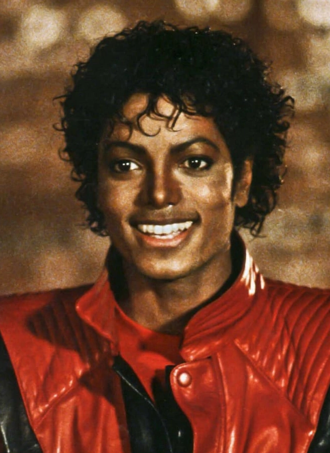
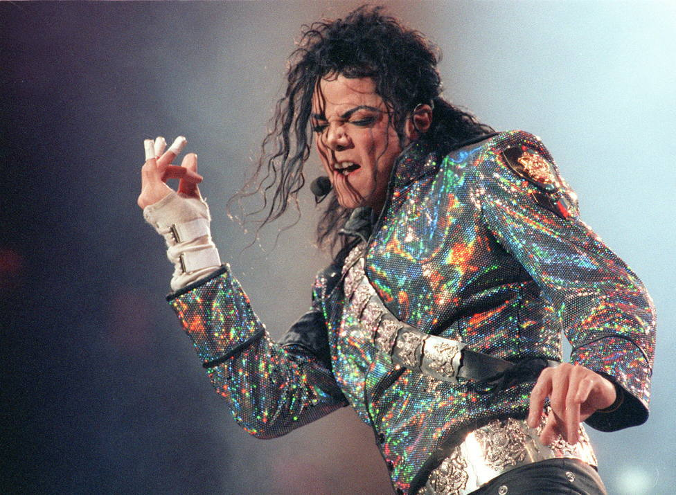
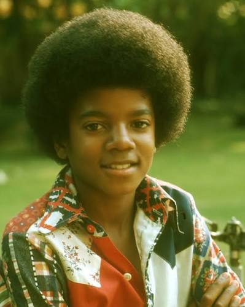
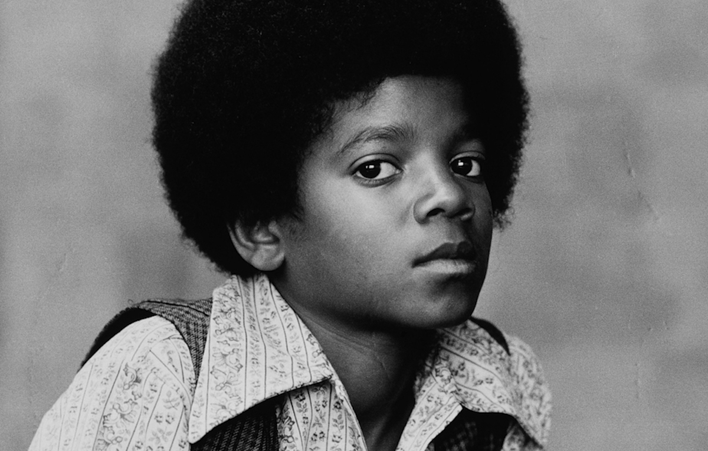
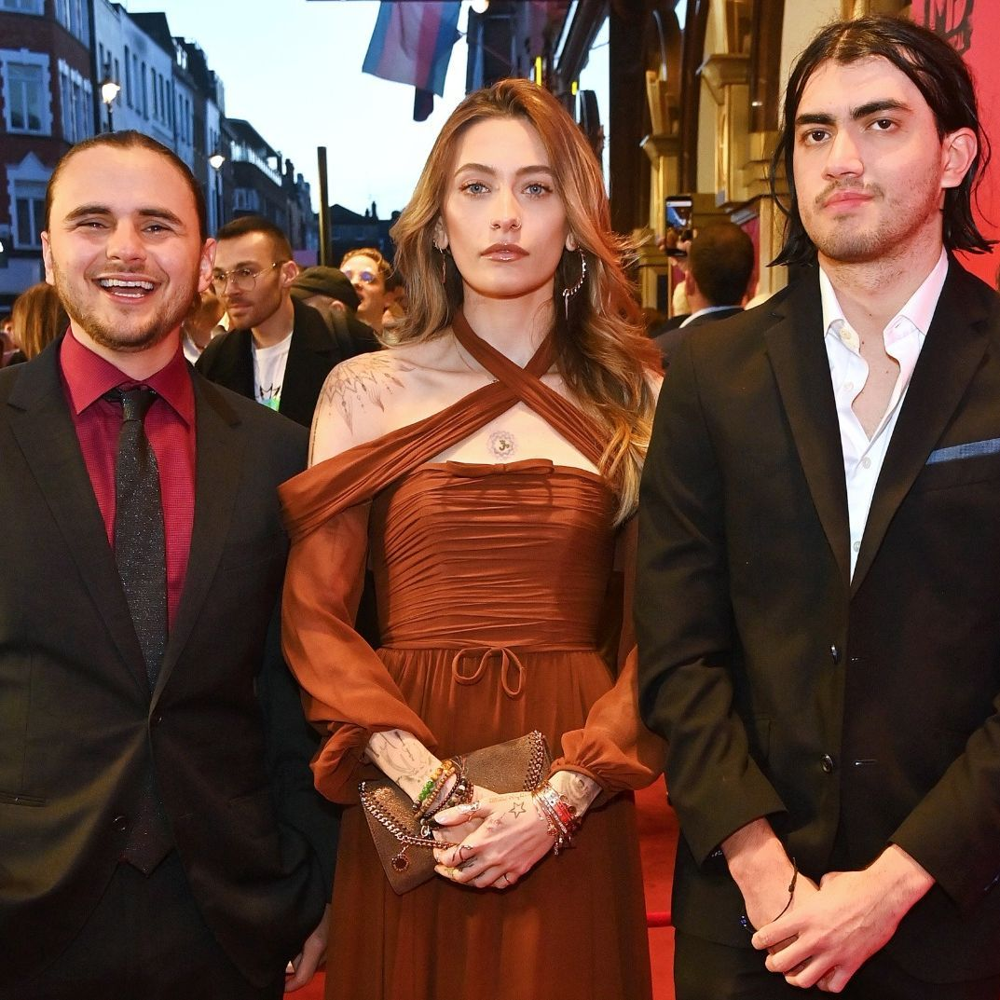

La nascita
Il 29 agosto nasce a Gary, in Indiana, in una famiglia numerosa e molto musicale.
29 agosto 1958 · 25 giugno 2009
Il Re del Pop. Una voce, un passo di danza, una leggenda.
Scopri la sua storiaDai primi passi con i fratelli fino al palcoscenico del mondo intero.
Il 29 agosto nasce a Gary, in Indiana, in una famiglia numerosa e molto musicale.
Insieme ai fratelli inizia a esibirsi: il talento del piccolo Michael colpisce subito tutti.
Il gruppo conquista le classifiche con "I Want You Back" e diventa un fenomeno.
Il primo grande album da solista da adulto: groove, eleganza e una nuova identità artistica.
Esce uno degli album più venduti di tutti i tempi e cambia per sempre il modo di fare musica e video.
Nello speciale tv "Motown 25" mostra al mondo il suo celebre passo di danza.
Co-scrive con Lionel Richie il brano benefico che riunisce decine di artisti contro la fame in Africa.
Un nuovo album, un nuovo look e un tour mondiale da record.
Suoni più duri e innovativi, tra pop, rock e new jack swing.
Fonda l'organizzazione benefica con cui sostiene progetti a favore dei bambini; nello stesso anno parte il Dangerous World Tour.
Il 31 gennaio si esibisce all'intervallo del Super Bowl davanti a un pubblico televisivo enorme, cambiando per sempre lo show dell'evento.
Un doppio album che unisce una raccolta dei successi e brani inediti.
L'ultimo album in studio pubblicato in vita.
Il 25 giugno scompare a Los Angeles, lasciando milioni di fan in tutto il mondo. La sua musica continua a vivere.
Oltre le luci del palco: infanzia, famiglia e generosità.
Michael cresce a Gary, in Indiana, in una famiglia numerosa. Il padre, Joseph, gestisce i Jackson 5 con grande severità e le prove sono lunghe e rigorose. Quella disciplina contribuisce a formare un professionista straordinario, ma Michael racconterà più volte, anche in una celebre intervista televisiva del 1993, di aver sentito la mancanza di un'infanzia normale.
Chi ha lavorato con lui lo descrive come un artista ossessionato dai dettagli: coreografie provate all'infinito, arrangiamenti rifatti finché non erano esattamente come li immaginava. Con Quincy Jones, producendo Off the Wall, Thriller e Bad, nasce una delle collaborazioni più fertili della storia della musica pop.
Nel 1988 acquista la tenuta che chiamerà Neverland Ranch, in California, un luogo che per lui voleva essere un rifugio e un parco giochi. Diventerà papà di tre figli, Prince, Paris e Bigi, che ha sempre cercato di proteggere dall'attenzione dei media.
Nel 1992 fonda la Heal the World Foundation e nel corso della carriera sostiene numerose organizzazioni benefiche. Brani come "We Are the World" e "Heal the World" nascono proprio dal desiderio di usare la musica per aiutare gli altri.
I problemi fisici che lo hanno accompagnato, raccontati con rispetto.
Durante le riprese di uno spot pubblicitario a Los Angeles, un effetto pirotecnico gli provoca ustioni di secondo grado al cuoio capelluto. Il dolore e le cure successive segnano l'inizio di un lungo rapporto con i farmaci antidolorifici.
Jackson ha parlato pubblicamente di soffrire di vitiligine, una condizione che provoca la perdita di pigmentazione della pelle, e ha riferito anche di una forma di lupus. La vitiligine è stata poi menzionata anche nel referto dell'autopsia. Per molti anni, voci e speculazioni sul suo aspetto hanno alimentato i tabloid.
Durante il Dangerous World Tour annuncia di dover interrompere le date rimanenti per entrare in un programma di riabilitazione dalla dipendenza da antidolorifici.
Si prepara a una lunga serie di concerti a Londra, This Is It. Il 25 giugno 2009 muore a Los Angeles per arresto cardiaco. Le autorità hanno stabilito che la causa è un'intossicazione acuta da propofol, assunto con altri sedativi. Il suo medico personale, Conrad Murray, è stato condannato nel 2011 per omicidio colposo.
Una vita sotto i riflettori è fatta anche di momenti difficili. Qui i fatti principali, in modo equilibrato. Tocca per aprire.
Negli anni '80 e '90 i tabloid costruiscono attorno a lui un personaggio spesso lontano dalla realtà, a partire dal soprannome "Wacko Jacko", che Jackson ha sempre detestato. Alcune storie, come quella della camera iperbarica, nascevano da trovate della stampa o da operazioni di immagine più che da fatti verificati.
Nel 1993 un ragazzino e la sua famiglia lo accusano di abusi. Jackson ha sempre negato ogni addebito. La vicenda si chiude con un accordo economico in sede civile, senza che nessuna accusa penale venga portata avanti. Fu un periodo durissimo per lui, anche sul piano personale.
Nel 2003 viene incriminato in California. Il processo si conclude nel giugno 2005 con l'assoluzione su tutti i capi d'accusa. Dopo il verdetto Jackson, provato dall'esperienza, si allontana a lungo dagli Stati Uniti.
Dopo la sua morte, nel documentario "Leaving Neverland" (2019) due uomini ripetono accuse nei suoi confronti. La famiglia e gli eredi le hanno sempre respinte, definendo il film di parte, e le vicende legali collegate sono proseguite per anni. Su questo tema le opinioni restano molto divise: per aggiornamenti seri conviene consultare fonti giornalistiche recenti.
Nel 2002 mostra il figlio più piccolo dal balcone di un hotel a Berlino. Jackson lo definì in seguito un gesto sconsiderato e si scusò pubblicamente. Il caso fece molto discutere e contribuì all'immagine negativa raccontata dai media.
Spese enormi, cause legali e un tenore di vita molto elevato portano negli anni 2000 a seri problemi finanziari. Nonostante tutto, mantenne una quota importante del catalogo editoriale Sony/ATV, che includeva canzoni dei Beatles acquistate negli anni '80.
Questa sezione riassume vicende pubbliche e documentate; non è una ricostruzione giudiziaria completa.
Sei dischi, sei epoche. Passa il mouse (o tocca) su un vinile per scoprire una curiosità.
L'album che lo lanciò come artista solista di livello mondiale, prodotto con Quincy Jones.
È considerato uno degli album più venduti di sempre e ha vinto otto Grammy in una sola serata nel 1984.
Cinque dei suoi singoli arrivarono al primo posto della classifica americana.
Segna una svolta più cupa e sperimentale, con produzioni ricche e moderne.
Un doppio album: un disco di grandi successi e un disco di brani nuovi.
L'ultimo album in studio uscito durante la sua vita, con collaborazioni di molti produttori.
Vuoi ascoltarlo? Cerca Michael Jackson su Spotify.
Le canzoni che hanno fatto la storia: crediti, significato e retroscena. (Niente testi: solo il loro spirito.)
Scritta da Jackson. Racconta la pressione della fama e l'ansia di essere accusati ingiustamente. Il suo basso inconfondibile e il ritmo secco ne fanno uno dei brani più riconoscibili in assoluto. Fu il pezzo con cui presentò il moonwalk in tv nel 1983.
Scritta da Jackson, con l'assolo di chitarra di Eddie Van Halen. Il messaggio è chiaro: è più coraggioso evitare una rissa che cercarla. Mescola pop e hard rock e abbatte le barriere tra le radio.
Scritta da Rod Temperton, con la voce recitata di Vincent Price. Una canzone dal tono horror ma giocoso, trasformata da un video-cortometraggio in un evento culturale.
Scritta da Jackson. Una storia di suspense con una vittima misteriosa. La famosa domanda ripetuta nel brano sembra ispirata ai manichini usati per insegnare la rianimazione. Il video in stile anni '30 è parte del film Moonwalker.
Scritta da Siedah Garrett e Glen Ballard. Il messaggio è che il cambiamento del mondo comincia da sé stessi. È diventata una delle canzoni-simbolo del suo impegno sociale.
Scritta da Jackson, con la chitarra di Slash. Parla di convivenza tra persone diverse. Il video, con l'effetto di trasformazione dei volti, fu trasmesso in contemporanea in moltissimi paesi.
Scritta da Jackson. Una preghiera semplice e commovente per un mondo migliore per i bambini. È il brano legato più direttamente alla sua fondazione benefica.
Scritta da Jackson. Un grido per l'ambiente, gli animali e le vittime delle guerre. Arrivò al primo posto in Gran Bretagna a Natale del 1995.
Scritta da Jackson e Lionel Richie, prodotta da Quincy Jones. Registrata in una sola notte da decine di artisti, raccolse fondi per le popolazioni colpite dalla carestia in Africa.
Le persone con cui ha condiviso la musica.
Duetti in "The Girl Is Mine" e "Say Say Say". McCartney scrisse anche "Girlfriend" per Off the Wall.
Autore di "I Can't Help It" e partner in "Just Good Friends".
La sorella è con lui in "Scream" (1995), il cui video è ricordato per l'altissimo budget.
Le chitarre di "Black or White" e di altri brani di Dangerous.
L'assolo di "Beat It", registrato come favore.
Co-autore di "We Are the World".
Co-autrice di "Man in the Mirror" e voce duettante in "I Just Can't Stop Loving You".
Il produttore di Off the Wall, Thriller e Bad: il sodalizio più celebre della sua carriera.
Quando i videoclip sono diventati cinema.
Circa 14 minuti diretti da John Landis, con trama, dialoghi e coreografia da horror musicale. Ha cambiato l'idea stessa di videoclip, trasformandolo in uno spettacolo da evento.
Furono tra i primi video di un artista afroamericano a ottenere una programmazione intensa su MTV, aiutando ad aprire il canale a un pubblico più ampio. Il premio MTV Video Vanguard fu poi intitolato a lui.
Scena cinematografica ambientata in un locale anni '30, con la celebre inclinazione e la coreografia di gruppo. Fa parte del film Moonwalker.
Famoso per le trasformazioni di volti da un viso all'altro, una novità tecnica all'epoca. Fu mostrato in contemporanea in molti paesi.
Il palco era il suo habitat naturale.
Il suo primo grande tour da solista: oltre cento concerti nel mondo, con un'attenzione maniacale a luci, coreografie ed effetti.
Aperto dalla scenografia spettacolare e da un ingresso quasi teatrale. Fu interrotto nel 1993, quando Jackson decise di curarsi dalla dipendenza dai farmaci.
Più di ottanta concerti nel mondo, con scenografie monumentali e un forte messaggio sociale.
La serie di concerti all'O2 Arena di Londra, annunciata in 10 date e poi estesa a 50, non è mai iniziata. Le prove sono diventate il film "This Is It", uscito dopo la sua scomparsa.
Dopo la reunion con i fratelli, da solo sul palco canta Billie Jean e mostra per la prima volta il moonwalk davanti al grande pubblico. Il giorno dopo era sulla bocca di tutti.
Compare in pose statuarie davanti a un pubblico gigantesco prima di esplodere nei suoi successi, rivoluzionando il concetto di show dell'intervallo.
Nel 1984 conquista otto premi in una sola serata; nel 1993 riceve il Grammy Legend Award.
I concerti al Madison Square Garden celebrano i suoi trent'anni da solista, con ospiti e un momento di reunion con i fratelli.
Wanna Be Startin' Somethin' · Billie Jean · Smooth Criminal · Beat It · Thriller · Man in the Mirror · Black or White · Earth Song
Ogni gesto e ogni dettaglio era pensato.
Il moonwalk, a modo nostro.
Sembra camminare in avanti mentre scivola all'indietro. Non lo inventò lui, ma lo rese leggenda.
L'inclinazione in avanti oltre il possibile in "Smooth Criminal", ottenuta grazie a un sistema di fissaggio dei piedi brevettato.
Equilibrio sulle punte dei piedi, una firma dei suoi spettacoli.
Giravolte velocissime e precise, che concludeva spesso con una posa immobile.
Un tocco al fedora, un movimento secco, e il pubblico impazziva.
Nei video come Thriller e Beat It la danza era narrazione, con ballerini che si muovevano come un organismo unico.
Un solo guanto bianco tempestato di cristalli, comparso per la prima volta nel 1983.
La giacca di pelle rossa del video di Thriller.
Pantaloni corti che lasciano vedere calzini bianchi luccicanti e mocassini neri.
Il cappello nero, simbolo di Smooth Criminal e di molti suoi concerti.
Decorate con spille e alamari, tipiche del periodo Bad e Dangerous.
Un tocco di mistero che accompagnava molte apparizioni pubbliche.
Il lato di Michael che voleva cambiare il mondo con la musica.
Secondo il Guinness dei Primati, Jackson è stato tra le star del pop che hanno sostenuto il maggior numero di organizzazioni benefiche, con decine di realtà aiutate nel corso degli anni.
Fondata nel 1992 per aiutare bambini in difficoltà, malati o in zone di guerra. Neverland veniva talvolta aperta a gruppi di ragazzi in cura o in situazioni difficili.
Perché la sua musica è ancora ovunque.
Ha fuso generi diversi e ha reso il pop un fenomeno globale. Molti artisti, da Usher a Justin Timberlake, da Beyoncé a Bruno Mars, hanno dichiarato di essersi ispirati a lui.
Il suo stile ha influenzato coreografi e ballerini in tutto il mondo, e le sue mosse sono ancora oggi studiate e imitate.
Debuttato a Broadway nel 2022, racconta la preparazione del Dangerous World Tour. Ha poi viaggiato tra Stati Uniti, Londra, Amburgo e Australia.
Gli spettacoli a lui dedicati, come Immortal World Tour e il progetto fisso a Las Vegas, hanno portato la sua musica in chiave acrobatica.
"Michael" (2010) e "Xscape" (2014) raccolgono materiale inedito o ripreso dall'archivio.
Dal film "This Is It" (2009) al biopic "Michael", diretto da Antoine Fuqua e interpretato dal nipote Jaafar Jackson, con uscita fissata ad aprile 2026.
Tocca una tessera per scoprire il retroscena.
Grammy Awards
Grammy in una sola notte (1984)
album in studio da adulto
anno del primo successo con i Jackson 5
Spazio per le foto che vorrai aggiungere tu.





